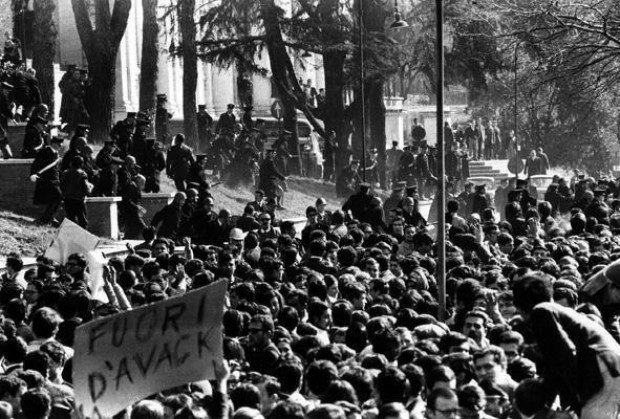
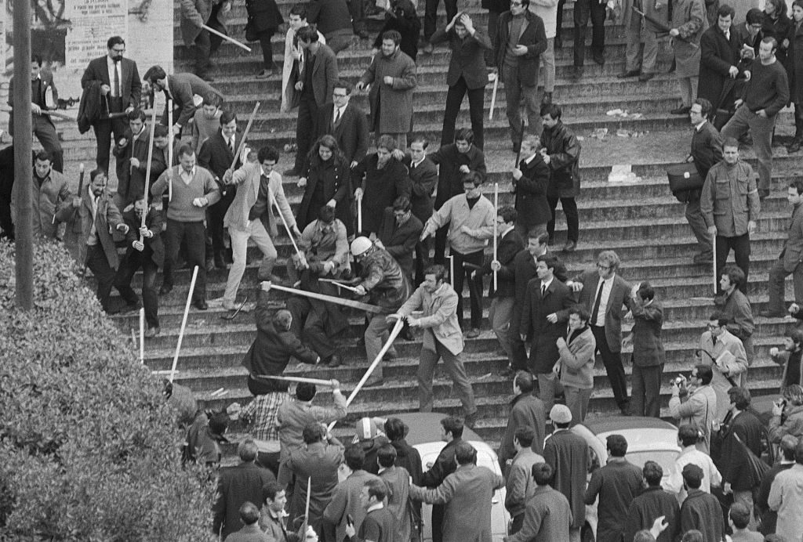
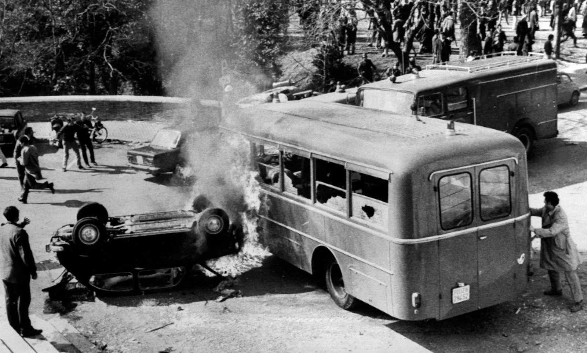
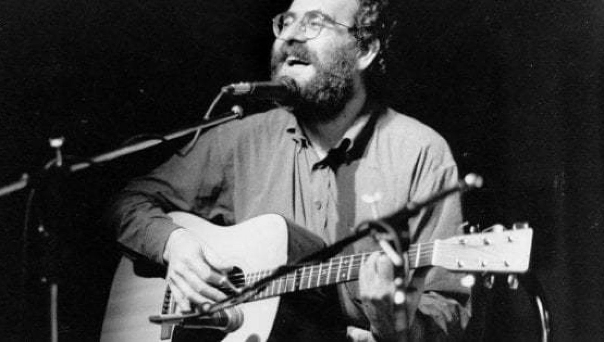
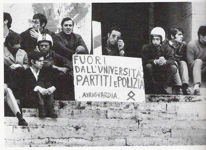
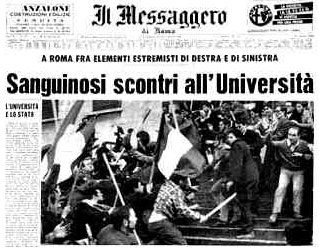
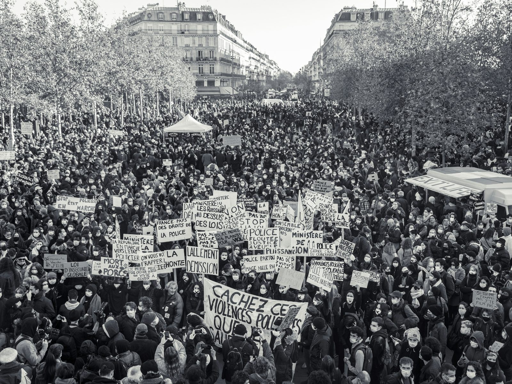
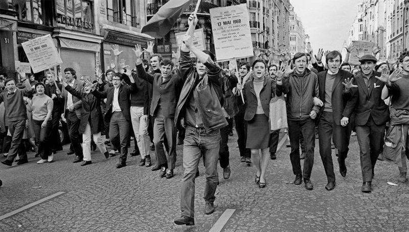
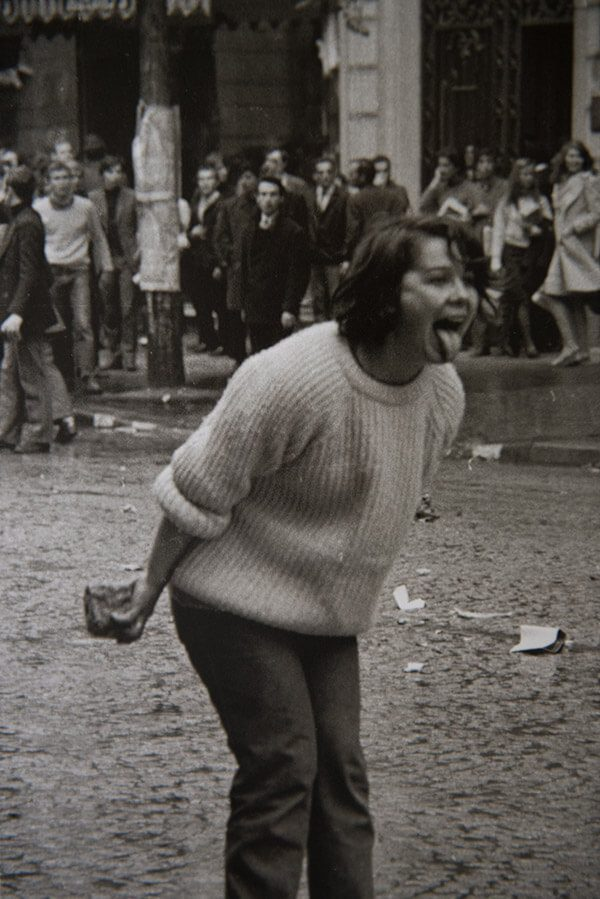

Ribelli per un mondo da loro non fantasticato. Viviamo in un momento di profondo cambiamento: la nuova generazione, indicata col termine baby boom, combatte per ristabilire l’equilibrio sociale, politico e naturale dei valori attuali-
Le università sono uno dei luoghi cardini per lo sviluppo delle nuove forme reazionarie verso il conservatorismo politico e i privilegi di casta. Al loro interno decise le regolazioni all’assetto sovvertitore da sostenere; Il fenomeno si organizza dalla metà degli anni 60, nelle facoltà di Roma, Torino, Milano e non solo. Riconosciuto successivamente con il nome di “potere studentesco”: attraverso la preparazione universitaria si attua l’organizzazione del consenso e l’acquisizione gerarchica dei valori della società del benessere.
Il ministro dell’interno Paolo Emilio Taviani alimenta il clima di tensione, stabilendo dalla metà del 66 un immediato mutamento nella prassi da seguire nell’intervento risanatorio negli atenei. Da ora in avanti il Prefetto dovrà subito mettersi in contatto con il Magnifico Rettore e comunicargli che la Polizia procederà all’impedimento dell’occupazione.
Insediare gli atenei rispecchia completamente a pieno la presa di coraggio canalizzata dagli studenti. Come scrive Hannah Arendt nel suo saggio intitolato “Sulla Violenza”, la nuova generazione è caratterizzata da una sorprendente volontà di agire e da una singolare fiducia nella possibilità di cambiamento.

Questo denominatore sociale è alla base dei fatti conseguiti il 1 marzo 1968, a Roma, nella Battaglia di Valle Giulia. Epica guerriglia urbana che vede scontrarsi gli studenti romani contro i poliziotti della celere. Migliaia di manifestanti si radunano in Piazza di Spagna e partono verso la città universitaria dove, ad attenderli alle porte della facoltà di lettere, c’è un imponente cordone di camionette delle forze dell’ordine.

“Hanno impugnato i manganelli, ed hanno picchiato come fanno sempre loro… e poi all’improvviso è successo un fatto nuovo, non siam scappati più" canta Paolo Pietrangeli nella canzone Valle Giulia, omaggiando l’episodio della rivolta come qualcosa di immaginabile e irrealizzabile. L’immaginazione al potere con un’ irrealizzabile partecipazione collaborativa dei due poli opposti del pensiero politico italiano.
Oreste Scalzone, del Movimento Studentesco e Stefano delle Chiaie, di Avanguardia Nazionale, conducono insieme la messa in opera del nuovo ideale rivoluzionario orchestrato dalle ragazze e i ragazzi del movimento sessantottino.

Manifestare il proprio essere nel mondo, coscienti della propria storia, con lo sguardo proiettato al futuro, a Valle Giulia si realizza il primo atto del mutamento sociale e politico che condizionerà gli anni imminenti del popolo italiano.

La “spettacolare rivolta” accaduta a Valle Giulia è sintomo del fenomeno situazionista francese. Tale processo di coscienza studentesca, stabilito con i fatti di Roma, si realizza con le stesse riprese a Parigi.

“Maggio francese” è il ricordo degli scioperi scaturiti nel maggio e giugno del 1968. Una stagione condensata di aspirazioni e cambiamenti, con la quale i giovani trovano linfa vitale nel dimostrare il loro atteggiamento nei confronti dei temi politici, sociali ed economici dettati dall’attuale società tradizionale. Le occupazioni alla Sorbona sono solo la punta dell'iceberg dell’universo situazionista che prende piede attraverso le anime e coscienze della giovane popolazione transalpina.
Arte e politica costituiscono le materie alla base del fenomeno. L’internazionale Situazionista vede al suo interno figure di rilievo come lo scrittore e teorico Guy Debord o il pittore italiano Giuseppe Pinot Gallizio. L'obiettivo è quello di riscoprire il particolare, attraverso il ludico e l’utopistico, eliminando la passività indottrinata dalle nuove forme di dominio dei mass media e del consumismo.


La pratica politico-artistica elaborata dai situazionisti con il termine détournement vede una sua contrapposizione con la nuova ondata cantautorale che incalza il pubblico italiano alla fine degli anni 60. Francesco Guccini con “Auschwitz”, Paolo Pietrangeli con la “Contessa” o Fabrizio De Andrè con “Canzone del maggio” sono chiari esempi di come le storie e i racconti popolari vengono riarrangiati in modo da prostrarsi in una nuova epica visione.
“La società dello spettacolo" descritta da Guy Debord caratterizza le nuove forme sonore del panorama musicale italiano. L’attuale universo discografico inizia a fare un rapido cambiamento sui gusti e sulle richieste da accontentare: in radio la “canzonetta d’amore” dovrà lasciare spazio a nuovi generi come quelli impegnati politicamente e di diversa focalizzazione sociale.
